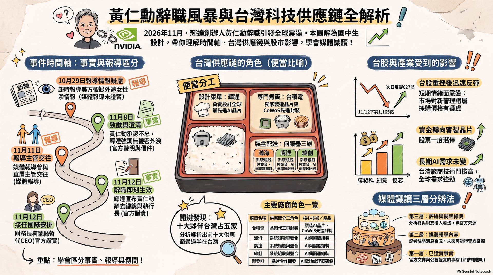
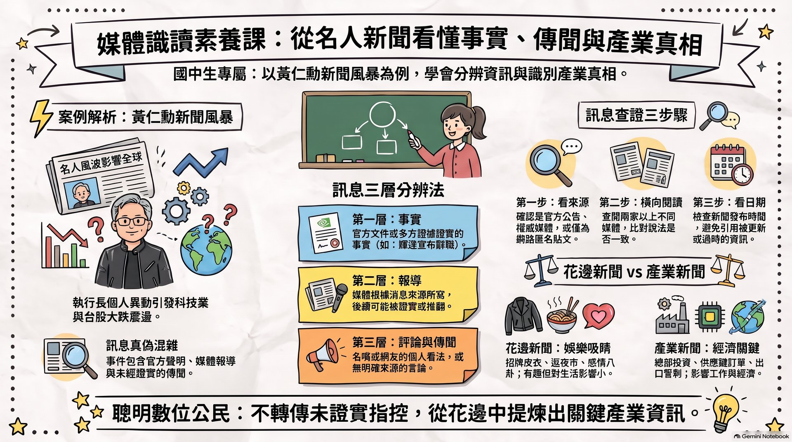

📌 先認識他
- 11963 年出生在台灣台南，9 歲和哥哥到美國讀書。
- 21993 年（30 歲）和朋友共同創立輝達（NVIDIA），設計 GPU（圖形處理器）。
- 3GPU 原本讓電玩畫面更漂亮，後來變成訓練 AI 的關鍵晶片，輝達因此成為全球市值最高的公司之一。
- 4他和台灣的台積電、鴻海、廣達等公司合作非常密切。
每一關都有閱讀重點、互動練習和小測驗。最後你要像記者一樣，用 100 字寫出這件事對台灣的影響，而且只寫有證據的內容。
學習目標：說出黃仁勳和輝達在做什麼，並分辨「花邊新聞」和「產業新聞」的差別。
CPU 像一位很聰明的數學老師，一次專心解一題難題。
GPU 像一整班同學，每人同時算一題簡單的，加起來速度超快。
AI 學習需要算「天文數字那麼多」的簡單運算，所以特別需要 GPU。
他說每天穿一樣的衣服，是為了省下挑衣服的時間，專心在工作。
在台大演講用台語問好，被民眾在夜市、小吃店「野生捕獲」，媒體稱為「仁來瘋」。
2026 年 5 月宴請台灣科技公司老闆，媒體用出席企業的總市值稱它「兆元宴」。
花邊新聞：有趣、吸睛，但對大多數人生活影響不大。產業新聞：比較無聊，但牽動工作機會、投資和經濟。點按鈕分類看看！
已完成 0 / 8
開場可請學生舉手：「誰在新聞上看過黃仁勳逛夜市？」再問：「這則新聞對你的生活有什麼影響？」帶出「花邊 vs 產業」的分類。提醒學生：花邊新聞不是不能看，而是要知道它的重要程度。
學習目標：用「便當」比喻說明 AI 供應鏈，並說出至少兩家台灣公司在其中做什麼。
📍 台北市北投士林科技園區（北士科）T17、T18 基地，約 4 公頃。
🗓️ 2025 年 5 月宣布 → 2026 年 2 月台北市政府與輝達完成簽約。
💬 台北市長蔣萬安引述輝達的營運計畫：這是輝達第一個海外總部，預計投入超過新台幣 400 億元、創造超過 1 萬個工作機會。
⚠️ 這是市府引述的「計畫數字」，實際成果要看未來執行。
可以問：「如果營養午餐的廚房停工，全校會怎樣？」讓學生體會「一個環節出事，整條鏈都受影響」。互動 2 的「如果換了設計菜單的人」按鈕，正好銜接 Stage 3。
學習目標：按照時間順序說出事件經過，並分辨哪些是官方證實的事實、哪些只是媒體報導。
事實有官方公告、文件或本人說法可以證實。報導媒體根據消息來源寫的，之後可能被證實，也可能被推翻。
已判斷 0 / 6
上司和直屬部屬交往，容易造成升遷、考績不公平。就像班長和負責評分的人有特殊關係，其他同學會覺得不公平。很多大公司規定要申報或禁止。
輝達的 AI 晶片是美國管制出口的高科技產品。執行長身邊的人被懷疑和外國情報有關，政府和投資人就會擔心機密外洩。（輝達表示沒有理由相信機密外洩。）
執行長代表整家公司。員工、客戶、股東都需要能信任他。信任一旦動搖，董事會就要做出決定。
本關涉及成人感情議題，建議用「公司治理、利益衝突、國家安全」的角度帶領，避免討論細節。若學生追問八卦，可回到課堂約定：「這部分跟公共影響無關，而且當事人家人也會看到。」
重要：情報疑雲目前只是美國媒體報導情報單位的懷疑，中國外交部否認，沒有官方定論。請不要讓學生把「被懷疑」說成「就是間諜」。
學習目標：讀懂一張簡單的股市圖，說出這件事對台灣「短期」和「長期」可能的影響，並標出哪些還不確定。
事實台灣股市 11 月 12 日下跌 1,165 點；11 月 13 日開盤反彈 627 點。
事實輝達股價在宣布當天盤中一度大跌（台灣媒體報導盤中跌幅超過 10%；美聯社報導收盤跌幅約 4%）。
🧠 比喻：股市像全班對球隊的信心指數。隊長突然離隊，大家先慌（下跌）；冷靜後發現隊友和訓練基地都還在，信心回來一些（反彈）。
評論分析師認為輝達相關的台灣公司股價會受情緒衝擊；也有分析師擔心新的管理團隊可能壓低採購價格。
事實部分做客製化 AI 晶片（ASIC）的台灣公司，例如聯發科、創意、世芯，股價一度漲停。投資人把錢從一邊移到另一邊。
評論多數分析師認為全球 AI 需求不會因一個人離開而消失，台積電的技術門檻仍高；也有分析師認為少了黃仁勳，長期對輝達不利。
股價和點數每天會變，上課當天可請學生查最新收盤，並與本頁數字比較，練習「看日期」。強調「股價波動」不等於「經濟崩盤」，也不鼓勵學生依新聞買賣股票。
學習目標：用「三層分辨法」判斷一句話是事實、報導還是評論／傳聞，並用查證三步驟檢查一則新聞。
可以被官方文件或多方證據證實的事。例：輝達 11 月 12 日宣布黃仁勳辭職。
媒體根據消息來源寫的內容，之後可能被證實或推翻。例：情報單位的懷疑。
分析師、名嘴、網友的看法，或沒有來源的說法。例：「台股一定會崩盤」。
已完成 0 / 8
是官方公告（例如輝達新聞稿、美國證管會文件）、主要新聞媒體，還是匿名貼文、截圖？
再找兩家不同的媒體，看說法是否一致。三篇都轉貼同一篇，只算一個來源。
新聞會一直更新。上週的「傳聞」可能這週被證實，也可能被推翻。
可延伸：請學生找一則本週的名人新聞，用三層分辨法逐句標色（綠＝事實、黃＝報導、紅＝評論）。可搭配本站「數位真相調查局」單元的橫向閱讀練習。
題目：「黃仁勳辭職，對台灣有什麼影響？」只寫有證據的內容，並至少標出一件還不確定的事。內容只存在這台裝置的瀏覽器裡，不會上傳。
目前 0 字
請不要輸入自己的姓名、電話或帳號。
檢查 0 / 6
由 NotebookLM 根據本課教材生成。可用 ← → 鍵翻頁，按「全螢幕」或雙擊畫面投影。


他 1963 年出生在台南，9 歲到美國，在美國長大、讀書、創業。他常說自己來自台灣，台語講得很流利，也常回台灣探親。
不會立刻。輝達仍是大公司，有暫代執行長和董事會運作，輝達表示營運和對客戶的承諾會照常進行。但市場會密切觀察新領導者的表現。
股市短期大跌又反彈，不等於經濟崩盤。全球 AI 需求仍高，台灣供應鏈的技術仍然重要；但長期影響還有不確定性，要持續觀察。
目前只是美國媒體報導情報單位的「懷疑」，中國外交部否認，也沒有官方證實。我們不應該把「被懷疑」說成「事實」。
因為他領導的是全球最有影響力的科技公司之一，他的決定牽動數兆元的市值、很多人的工作，還牽涉國家安全和公司的規矩。
台灣很多工作和家庭收入都和科技業有關；而且它是練習「分辨事實、報導和傳聞」的最佳時事案例。
本頁整理至 2026/11/13。事件仍在發展（財報、接班人、可能的調查），請以官方公告為準，並在上課前更新。股票相關內容僅供理解經濟關係，不構成任何投資建議。